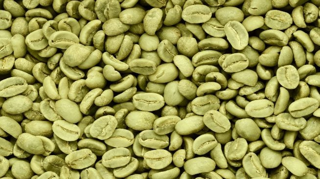

Where do Coffee Beans come from?
Coffee has become a staple of our everyday lives. The world seems to revolve around the rich, dark liquid and many people would agree that their day doesn't start until that first invigorating cup. However, the vast majority hasn't paused to consider, where do coffee beans come from?
Coffee beans come from the coffee plant, a bush-like plant which can get very tall (coffee farmers will usually keep them trimmed to around 5ft to keep them manageable). On these coffee plants, bunches of cherries grow and it's inside these that you'll find two coffee beans.
Where is Coffee grown?
Most coffee plants are grown around what's known as 'the bean belt', an area around the equator between the tropics of Capricorn and Cancer. It's here that's home to the coffee capitals of the world such as Brazil, Vietnam, Colombia, Indonesia and Ethiopia, as these are the locations that coffee's given the perfect growing conditions to thrive. Interestingly, the location of where coffee beans are grown can alter the taste. Things such as climate, elevation and even soil type can impact the flavour of the coffee the beans produce.
Do different plants produce different coffee beans?
Yes, there's over 120 varieties of coffee plants and each produces a different type of coffee bean, however the majority of the coffee we consume comes from just two variants, Robusta (also known as Coffea Robusta or Coffea Canephora) or Arabica (Coffea Arabica) or a blend of the two. The two varieties differ in taste, growing conditions, and price.
Arabica Coffee Beans

Arabica coffee beans is one of the most popular types and it's believed to be one of the first coffee species ever grown with roots dating back to 1,000BC. The beans are generally oval in shape, have a pronounced centre crease and are larger than Robusta beans.
Known for their vibrant and complex flavours, these beans are loved by coffee connoisseurs because they tend to have a sweeter, softer taste, with tones of fruits, florals, chocolate and nuts, although their acidity is higher.
Generally, it is more expensive than Robusta. This is because it is much more delicate and needs more specific cultivation requirements, such as weather and altitude, to grow. Typically, Arabica coffee beans are grown at altitudes between 500m and 2500m and have low caffeine content. Latin America, specifically Brazil, is currently the largest producer of Arabica coffee.
Robusta coffee beans
Commonly grown in Africa, Vietnam and Indonesia, Robusta has lower acidity levels than Arabica coffee, meaning it generally tastes much less sweet. Due to its simpler acidity and deeper and stronger flavour compounds, Robusta can produce tones of wood or burnt rubber. It's a popular choice for espressos due to the rich flavour and layer of crema it gives.
Robustas are grown in altitudes of no more than 1000m, and they produce fruit much more quickly than the Arabicas, which need several years to come to maturity, and they yield more crop per tree. They are less vulnerable to pests and weather conditions and this is the main reason why they are on average cheaper than Arabicas. One other aspect to bear in mind is that Robusta coffee beans have a higher caffeine content.
Coffee beans from the Robusta species are generally smaller and more circular than Arabica beans, they are also usually paler, and the centre crease is less pronounced.